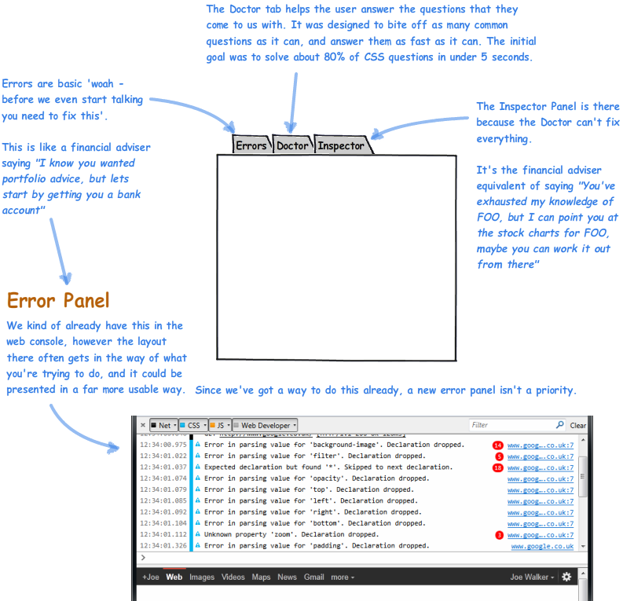
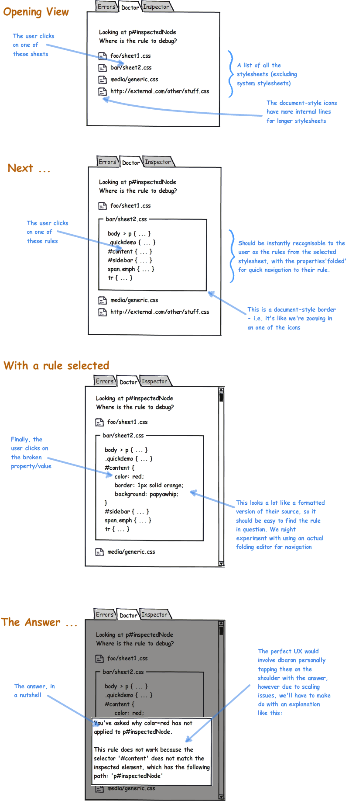
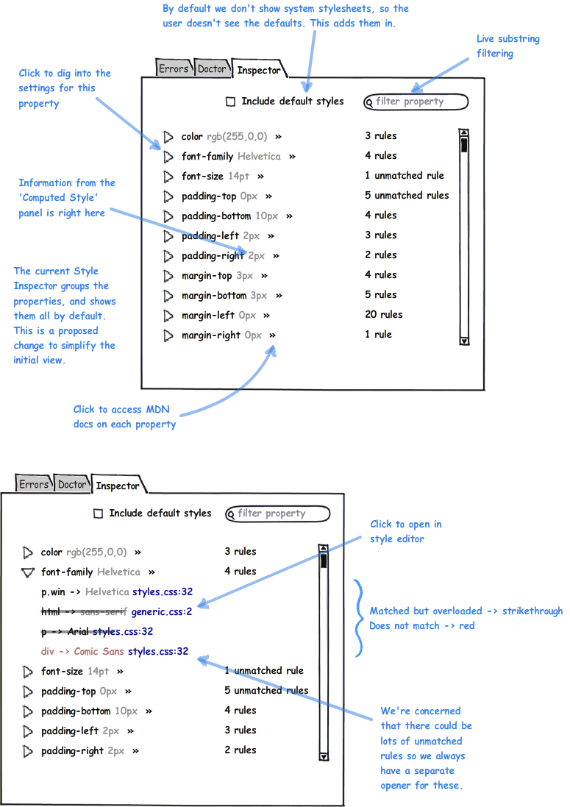

Firefox developer tools is planning to have a different set of CSS panels to Firebug and other browsers. This document explains those panels and why we're changing things. The Inspector panel is planned for this quarter, the Doctor for the next.

What we're trying to do: The user is editing some CSS, they've changed a rule, they flip to the brower and hit F5, but their change hasn't had the desired effect. Why not?
So they right click on the broken element, we help them find the rule they were editing, and then we tell them what's wrong. The right-click part is a well understood problem, this is about the 'rule selection' part.

There is a working prototype of the CSS Doctor at https://people.mozilla.com/~jwalker/cssdoctor/demo.html
Firebug has a CSS panel which contains *all* the styles that apply to a node, sorted according to the following:
The problems with this view are:
We propose sorting the CSS panel by property, and combining it with the Computed Style panel.
